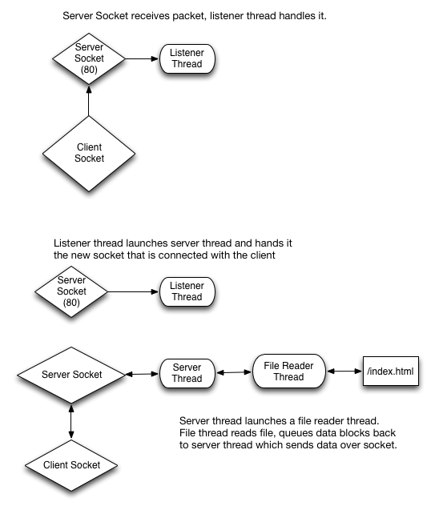

Concurrency and Threads
Threads vs Processes
- Traditional Operating Systems have Processes
Each process has its own address space
Single thread of control
When a process makes a system call, the process blocks until the call completes.
- In many situations it is desirable to have multiple threads of control for:
Explicit parallelism - to take advantage of multiple processors
- To allow computation to continue while waiting for system calls to return
example: one thread reads a file into a buffer, another thread compresses the buffer, and a final thread writes out a compressed file.
To reduce the cost of context switching
Implicit parallelism - to keep a single processor busy
What are Processes, Threads?
- Processes have:
Program counter
Stack
Register set
An exclusive virtual address space
Sandboxing from other process except to the extent that the process participates in IPC

- Threads:
Threads can be thought of (and are often referred to as) lightweight processes
Provide multiple threads of control
Have multiple program counters
Have multiple stacks
One parent process, the virtual address space is shared across processes
Each thread runs sequentially
In a given process with N threads, 0-i threads may be blocked, and 0-k threads are runnable or running.

Common Threading Use Cases
- Client / Server - ex: file servers:
One thread listens on a network socket for clients
When a client connects, a new thread is spawned to handle the request. This permits several clients to connect to the file server at one time because each request is handled by a separate thread of execution.
To send the file data, two threads can be used the first can read from the file on disk and the second can write the read buffers to the socket.

Example Client-Server - a TCP echo server
1 public class TcpServer
2 {
3 private Socket _socket;
4 private Thread _serverThread;
5
6 public TcpServer() {
7 _socket = new Socket (AddressFamily.InterNetwork, SocketType.Stream, ProtocolType.Tcp);
8 _serverThread = new Thread (Server);
9 _serverThread.Start ();
10 }
11
12 private void Server() {
13 _socket.Bind (new IPEndPoint (IPAddress.Any, 8080));
14 _socket.Listen (100);
15 while (true) {
16 var serverClientSocket = _socket.Accept ();
17 new Thread (Server) { IsBackground = true }.Start (serverClientSocket);
18 }
19 }
20
21 private void ServerThread(Object arg) {
22 try {
23 var socket = (Socket)arg;
24 socket.Send (Encoding.UTF8.GetBytes ("Echo"));
25 } catch(SocketException se) {
26 Console.WriteLine (se.Message);
27 }
28 }
29 }
30
31 public class TcpClient {
32 public void ConnectToServer() {
33 var socket = new Socket (AddressFamily.InterNetwork, SocketType.Stream, ProtocolType.Tcp);
34 socket.Connect (new IPEndPoint (IPAddress.Parse("127.0.0.1"), 8080));
35 var buffer = new byte[1024];
36 var receivedBytes = socket.Receive (buffer);
37 if (receivedBytes > 0) {
38 Array.Resize (ref buffer, receivedBytes);
39 Console.WriteLine (System.Text.Encoding.UTF8.GetString (buffer));
40 }
41 }
42 }
- Parallel computation:
An algorithm is designed to solve some small part or subproblem of a larger problem
To the extent that the subproblems are not inter-dependent, they can be executed in parallel
Multiple threads can work against a common task queue.

Warning
The focus of this course is on distributed (not parallel) systems. Nevertheless, you may find that you want to take advantage of parallel computing in your work. We encourage you to read Christopher and Thiruvathukal, http://hpjpc.googlecode.com, which contains many examples of parallel algorithms in Java. You may also find Läufer, Lewis, and Thiruvathukal’s Scala workshop tutorial helpful. See http://scalaworkshop.cs.luc.edu.
Example Parallel Computation - factoring an integer
1 public class ParallelComputationWorkItem {
2 public readonly long LowerBound;
3 public readonly long UpperBound;
4 public readonly long Number;
5 public readonly ICollection<long> Divisors;
6 public ParallelComputationWorkItem(long lower, long upper, long number, ICollection<long> divisors) {
7 LowerBound = lower;
8 UpperBound = upper;
9 Number = number;
10 Divisors = divisors;
11 }
12 }
13
14 public class ParallelComputation {
15
16 public void PrintFactors(long number) {
17 var threads = new List<Thread>();
18 var divisors = new List<long> ();
19 var cpuCount = Environment.ProcessorCount;
20 long lower = 1;
21 for (var i = 0; i < cpuCount; i++) {
22 var thread = new Thread (Worker);
23 var upper = lower + (number / cpuCount);
24 thread.Start(new ParallelComputationWorkItem(lower, upper, number, divisors));
25 threads.Add (thread);
26 lower = upper;
27 }
28 foreach (var thread in threads) {
29 thread.Join ();
30 }
31 Console.WriteLine ("Divisors - ");
32 foreach (var divisor in divisors) {
33 Console.WriteLine (divisor);
34 }
35 }
36
37 private void Worker(object args) {
38 var workItem = (ParallelComputationWorkItem)args;
39 for (var i = workItem.LowerBound; i < workItem.UpperBound; i++) {
40 if (workItem.Number % i == 0) {
41 lock (workItem.Divisors) {
42 workItem.Divisors.Add (i);
43 }
44 }
45 }
46 }
47 }
- Pipeline processing:
An algorithm must be executed in several stages that depend upon each other.
For example if there are three stages, then three threads can be launched for each of the stages. As the first thread completes some part of the total work, it can pass it to a queue for the second stage to be processed by the second thread. At this time, the first thread and second thread can work on their own stages in parallel. The same continues to the third thread for the third stage of computation.
Example Pipeline Processing - file compression
1 public class PipelineComputation {
2 private readonly Queue<byte[]> _readData;
3 private readonly Queue<byte[]> _compressionData;
4 private volatile bool _reading = true;
5 private volatile bool _compressing = true;
6
7 public PipelineComputation () {
8 _readData = new Queue<byte[]>();
9 _compressionData = new Queue<byte[]>();
10 }
11
12 public void PerformCompression() {
13 var readerThread = new Thread (FileReader);
14 var compressThread = new Thread (Compression);
15 var writerThread = new Thread (FileWriter);
16 readerThread.Start ();
17 compressThread.Start ();
18 writerThread.Start ();
19 readerThread.Join ();
20 compressThread.Join ();
21 writerThread.Join ();
22 }
23
24 private void FileReader() {
25 using (var stream = new FileStream("file.txt", FileMode.Open, FileAccess.Read)) {
26 int len;
27 var buffer = new byte[1024];
28 while ((len = stream.Read(buffer, 0, buffer.Length)) > 0) {
29 if (len != buffer.Length) {
30 Array.Resize (ref buffer, len);
31 }
32 lock (_readData) {
33 while (_readData.Count > 10) {
34 Monitor.Wait (_readData);
35 }
36 _readData.Enqueue(buffer);
37 Monitor.Pulse (_readData);
38 }
39 }
40 }
41 _reading = false;
42 }
43
44 private void Compression() {
45 var workLeft = false;
46 while (_reading || workLeft) {
47 workLeft = false;
48 byte[] dataToCompress = null;
49 lock (_readData) {
50 while (_reading && _readData.Count == 0) {
51 Monitor.Wait (_readData, 100);
52 }
53 workLeft = _readData.Count > 1;
54 if (_readData.Count > 0) {
55 dataToCompress = _readData.Dequeue ();
56 }
57 }
58 if (dataToCompress != null) {
59 var compressed = Compress(dataToCompress);
60 lock (_compressionData) {
61 while (_compressionData.Count > 10) {
62 Monitor.Wait (_compressionData, 100);
63 }
64 _compressionData.Enqueue (compressed);
65 Monitor.Pulse (_compressionData);
66 }
67 }
68 }
69 _compressing = false;
70 }
71
72 private static byte[] Compress(byte[] data) {
73 var memStream = new MemoryStream ();
74 using(var compressionStream = new GZipStream(memStream, CompressionMode.Compress)) {
75 compressionStream.Write(data, 0, data.Length);
76 }
77 return memStream.ToArray ();
78 }
79
80 private void FileWriter() {
81 using (var stream = new FileStream("file.gz", FileMode.OpenOrCreate, FileAccess.Write)) {
82 var workLeft = false;
83 while (_compressing || workLeft) {
84 workLeft = false;
85 byte[] compressedData = null;
86 lock (_compressionData) {
87 while (_compressionData.Count == 0 && _compressing) {
88 Monitor.Wait (_compressionData, 100);
89 }
90 workLeft = _compressionData.Count > 1;
91 if (_compressionData.Count > 0) {
92 compressedData = _compressionData.Dequeue ();
93 }
94 }
95 if (compressedData != null) {
96 stream.Write (compressedData, 0, compressedData.Length);
97 }
98 }
99 }
100 }
101 }
Example Pipeline Processing - a more concise and language friendly file compression
1 public class ConcisePipelineComputation
2 {
3 public ConcisePipelineComputation () {
4 }
5
6 public void PerformCompression() {
7 var fileBlocks = new ThreadedList<byte[]>(FileReader());
8 var compressedBlocks = new ThreadedList<byte[]> (Compression(fileBlocks));
9 FileWriter (compressedBlocks);
10 }
11
12 private IEnumerable<byte[]> FileReader() {
13 using (var stream = new FileStream("file.txt", FileMode.Open, FileAccess.Read)) {
14 int len;
15 var buffer = new byte[1024];
16 while ((len = stream.Read(buffer, 0, buffer.Length)) > 0) {
17 if (len != buffer.Length) {
18 Array.Resize (ref buffer, len);
19 }
20 yield return buffer;
21 }
22 }
23 }
24
25 private IEnumerable<byte[]> Compression(IEnumerable<byte[]> readBuffer) {
26 foreach (var buffer in readBuffer) {
27 yield return Compress (buffer);
28 }
29 }
30
31 private static byte[] Compress(byte[] data) {
32 var memStream = new MemoryStream ();
33 using(var compressionStream = new GZipStream(memStream, CompressionMode.Compress)) {
34 compressionStream.Write(data, 0, data.Length);
35 }
36 return memStream.ToArray ();
37 }
38
39 private void FileWriter(IEnumerable<byte[]> compressedBuffer) {
40 using (var stream = new FileStream("file.gz", FileMode.OpenOrCreate, FileAccess.Write)) {
41 foreach (var buffer in compressedBuffer) {
42 stream.Write (buffer, 0, buffer.Length);
43 }
44 }
45 }
46 }
Helper class - ThreadedList
1 public class ThreadedList<T> : IEnumerable<T>
2 {
3 private readonly IEnumerable<T> _list;
4
5 public ThreadedList (IEnumerable<T> list){
6 _list = list;
7 }
8
9 public IEnumerator<T> GetEnumerator ()
10 {
11 return new ThreadedEnumerator<T>(_list.GetEnumerator ());
12 }
13
14 System.Collections.IEnumerator System.Collections.IEnumerable.GetEnumerator ()
15 {
16 return GetEnumerator ();
17 }
18
19 private class ThreadedEnumerator<S> : IEnumerator<S> {
20
21 private readonly IEnumerator<S> _enumerator;
22 private readonly Queue<S> _queue;
23 private const int _maxQueueSize = 10;
24 private readonly Thread _thread;
25 private volatile bool _keepGoing = true;
26 private volatile bool _finishedEnumerating = false;
27 private S _current;
28
29 public ThreadedEnumerator(IEnumerator<S> enumerator) {
30 _enumerator = enumerator;
31 _thread = new Thread(Enumerate);
32 _thread.Start();
33 }
34
35 private void Enumerate() {
36 while (_keepGoing) {
37 if (_enumerator.MoveNext ()) {
38 var current = _enumerator.Current;
39 lock (_queue) {
40 while (_queue.Count > _maxQueueSize && _keepGoing) {
41 Monitor.Wait (_queue, 100);
42 }
43 if (_keepGoing) {
44 _queue.Enqueue (current);
45 Monitor.Pulse (_queue);
46 }
47 }
48 } else {
49 break;
50 }
51 }
52 _finishedEnumerating = true;
53 }
54
55 public bool MoveNext ()
56 {
57 lock (_queue) {
58 while (!_finishedEnumerating && _queue.Count == 0) {
59 Monitor.Wait (_queue, 100);
60 }
61 if (_queue.Count > 0) {
62 _current = _queue.Dequeue ();
63 Monitor.Pulse (_queue);
64 return true;
65 } else {
66 _current = default(S);
67 return false;
68 }
69 }
70 }
71
72 public void Reset () {
73 lock (_queue) {
74 lock (_enumerator) {
75 _enumerator.Reset ();
76 _queue.Clear ();
77 }
78 }
79 }
80
81 object System.Collections.IEnumerator.Current {
82 get { return _current; }
83 }
84
85 public void Dispose () {
86 _keepGoing = false;
87 _thread.Join ();
88 }
89
90 public S Current {
91 get { return _current; }
92 }
93 }
94 }
Mutual Exclusion
Mutual exclusion is a general problem that applies to both processes and threads.
- Processes
Occurs with processes that share resources such as shared memory, files, and other resources that must be updated atomically
When not otherwise shared, the address space of a process is protected against reads/writes by other processes
- Threads
Because threads share more resources such as having a shared process heap, there are more resources that need to be potentially protected
Because the address space is shared among threads in one process, cooperation and coordination is required for threads that read from and write to shared data structures
When mutual exclusion is achieved, atomic operations on shared data structures are guaranteed to be atomic and not interrupted by other threads.
Tools for Achieving Mutual Exclusion
- Mutex
Has two operations: Lock() and Unlock()
Has two states: Locked or Unlocked
A lock can be acquired before entering a critical region and unlock can be called when leaving the critical region
If all critical regions are covered by a mutex, then mutual exclusion has been achieved and operations can be said to be atomic
- Semaphore
Has two operations: Up() and Down()
Has N states: a counter that has a value from 0 - N
Up() increases the value by 1
Down() decreases the value by 1
When the semaphore has a value > 0, then a thread of execution can enter the critical region
When the semaphore has a value = 0, then a thread is blocked
- The purpose of a semaphore is used to:
Limit the number of threads that enter a critical region
Limit the number of items in a queue between two threads working in a pipeline processing pattern.
- Monitor
Has four operations: Lock(), Unlock(), Pulse(), Wait()
Allows for more complicated and user-coded conditions for entering critical regions
The locking semantics are more complicated for the simplest cases, but can express more complicated mutual exclusion cases in simpler ways than can semaphores or mutexes
- Additional details may be found in the Operating Systems course
Mutual Exclusion - http://osdi.cs.courseclouds.com/html/mutualexclusion.html
Deadlock - http://osdi.cs.courseclouds.com/html/deadlock.html
Mutex Example/Java
This code example shows how to implement a classic mutex, a.k.a. a Lock, in Java.
These examples come from http://hpjpc.googlecode.com by Christopher and Thiruvathukal.
1public class Lock {
2 protected boolean locked;
3
4 public Lock() {
5 locked = false;
6 }
7
8 public synchronized void lock() throws InterruptedException {
9 while (locked)
10 wait();
11 locked = true;
12 }
13
14 public synchronized void unlock() {
15 locked = false;
16 notify();
17 }
18}
Semaphore Example
This shows how to implement a counting semaphore in the Java programming language.
1
2public class Semaphore {
3 /**
4 * The current count, which must be non-negative.
5 */
6 protected int count;
7
8 /**
9 * Create a counting Semaphore with a specified initial count.
10 *
11 * @param initCount The initial value of count.
12 * @throws com.toolsofcomputing.thread.NegativeSemaphoreException if initCount < 0.
13 */
14 public Semaphore(int initCount) throws NegativeSemaphoreException {
15 if (initCount < 0)
16 throw new NegativeSemaphoreException();
17 count = initCount;
18 }
19
20 /**
21 * Create a counting Semaphore with an initial count of zero.
22 */
23 public Semaphore() {
24 count = 0;
25 }
26
27 /**
28 * Subtract one from the count. Since count must be non-negative, wait until
29 * count is positive before decrementing it.
30 *
31 * @throws InterruptedException if thread is interrupted while waiting.
32 */
33 public synchronized void down() throws InterruptedException {
34 while (count == 0)
35 wait();
36 count--;
37 }
38
39 /**
40 * Add one to the count. Wake up a thread waiting to "down" the semaphore, if
41 * any.
42 */
43 public synchronized void up() {
44 count++;
45 notify();
46 }
47}
48
Barrier
This shows how to implement a barrier, which is a synchronization mechanism for awaiting a specified number of threads before processing can continue. Once all threads have arrived, processing can continue.
1
2public class SimpleBarrier {
3 /**
4 * Number of threads that still must gather.
5 */
6 protected int count;
7 /**
8 * Total number of threads that must gather.
9 */
10 protected int initCount;
11
12 /**
13 * Creates a Barrier at which n threads may repeatedly gather.
14 *
15 * @param n total number of threads that must gather.
16 */
17
18 public SimpleBarrier(int n) {
19 if (n <= 0)
20 throw new IllegalArgumentException(
21 "Barrier initialization specified non-positive value " + n);
22 initCount = count = n;
23 }
24
25 /**
26 * Is called by a thread to wait for the rest of the n threads to gather
27 * before the set of threads may continue executing.
28 *
29 * @throws InterruptedException If interrupted while waiting.
30 */
31 public synchronized void gather() throws InterruptedException {
32 if (--count > 0)
33 wait();
34 else {
35 count = initCount;
36 notifyAll();
37 }
38 }
39}
40
Deadlock - a classic problem
A classic problem in computer science and one that is often studied in operating systems to show the hazards of working with shared, synchronized state, is the dining philosophers problem. We won’t describe the entire problem here but you can read http://en.wikipedia.org/wiki/Dining_philosophers_problem.
our “solution” has the following design:
Fork: A class to represent the forks shared by adjacent philosophers at the table.
Diner0: A class used to represent a philosopher. The philosopher does three things a philosopher normally does: think(), sleep(), and eat().
Diners0: A class used to represent all of the diners seated at the table with their shared forks. This is where the concurrency takes place.
Fork
1public class Fork {
2 public char id;
3
4 private Lock lock = new Lock();
5
6 public Fork(int value) {
7 this.id = new Integer(value).toString().charAt(0);
8 }
9
10 public void pickup() throws InterruptedException {
11 lock.lock();
12 }
13
14 public void putdown() throws InterruptedException {
15 lock.unlock();
16 }
17}
Diner0
1public class Diner0 extends Thread {
2 private char state = 't';
3 private Fork L, R;
4
5 public Diner0(Fork left, Fork right) {
6 super();
7 L = left;
8 R = right;
9 }
10
11 protected void think() throws InterruptedException {
12 sleep((long) (Math.random() * 7.0));
13 }
14
15 protected void eat() throws InterruptedException {
16 sleep((long) (Math.random() * 7.0));
17 }
18
19 public char getDinerState() {
20 return state;
21 }
22
23 public void run() {
24 int i;
25
26 try {
27 for (i = 0; i < 1000; i++) {
28 state = 't';
29 think();
30 state = L.id;
31 sleep(1);
32 L.pickup();
33 state = R.id;
34 sleep(1);
35 R.pickup();
36 state = 'e';
37 eat();
38 L.putdown();
39 R.putdown();
40 }
41 state = 'd';
42 } catch (InterruptedException e) {
43 }
44 }
45}
Diners0
1public class Diners0 {
2 private static Fork[] fork = new Fork[5];
3 private static Diner0[] diner = new Diner0[5];
4
5 public static void main(String[] args) {
6 int i, j = 0;
7 boolean goOn;
8
9 for (i = 0; i < 5; i++) {
10 fork[i] = new Fork(i);
11 }
12
13 for (i = 0; i < 5; i++) {
14 diner[i] = new Diner0(fork[i], fork[(i + 1) % 5]);
15 }
16
17 for (i = 0; i < 5; i++) {
18 diner[i].start();
19 }
20
21 int newPrio = Thread.currentThread().getPriority() + 1;
22
23 Thread.currentThread().setPriority(newPrio);
24
25 goOn = true;
26
27 while (goOn) {
28 for (i = 0; i < 5; i++) {
29 System.out.print(diner[i].getDinerState());
30 }
31
32 if (++j % 5 == 0)
33 System.out.println();
34 else
35 System.out.print(' ');
36
37 goOn = false;
38
39 for (i = 0; i < 5; i++) {
40 goOn |= diner[i].getDinerState() != 'd';
41 }
42
43 try {
44 Thread.sleep(51);
45 } catch (InterruptedException e) {
46 return;
47 }
48 }
49 }
50}
Diners1 - eliminating deadlock with resource enumeration
1 for (i = 0; i < 4; i++) {
2 diner[i] = new Diner0(fork[i], fork[(i + 1) % 5]);
3 }
4 diner[4] = new Diner0(fork[0], fork[4]);
Execution - With Deadlock
If you have Java and Gradle installed on your computer, you can try these out!
Make sure you have the HPJPC source code:
hg clone https://bitbucket.org/loyolachicagocs_books/hpjpc-source-java
The following Gradle task in build.gradle shows how to run Diners0’s main() method:
1task Diners0(dependsOn: 'classes', type: JavaExec) {
2 main = 'info.jhpc.textbook.chapter03.Diners0'
3 classpath = sourceSets.main.runtimeClasspath
4 args = []
5}
To build:
gradle build
To run:
gradle Diners0
If you run this, you will notice that deadlock ensues fairly quick. The diners get into a state where they are waiting on each others’ forks in a cycle:
$ gradle Diners0
:compileJava UP-TO-DATE
:processResources UP-TO-DATE
:classes UP-TO-DATE
:Diners0
tet4t 023et 12ett 0et40 e134e
et340 12ett 12ett 123et e1340
0234e e23e4 1tt40 t23et ett40
t23et 1ett0 12et0 t23et 1tt40
1t34e 12et0 1et40 12e30 t234e
12e30 1et40 tetet et3t4 1t3e4
1e240 1tte4 12tt0 t2ete t2tt0
11e3t et3t0 t234e e1340 11t40
1t340 0e24e tttet tt34e 12e3t
1t24e 0t3e4 tet4e 12340 12340
12340 12340 12340 12340 12340
12340 12340 12340 12340 12340
12340 12340 12340 12340 12340
12340 12340 12340 12340 12340
12340 12340 12340 12340 12340
12340 12340 12340 12340 12340
12340 12340 12340 12340 12340
12340 12340 12340 12340 12340
12340 12340 12340 12340 12340
12340 12340 12340 12340 12340
12340 12340 12340 12340 12340
12340 12340 12340 12340 12340
12340 12340 12340 12340 12340
12340 12340 12340 12340 12340
12340 12340 12340 12340 12340
Deadlock-Free Version
Diners1 has a similar Gradle task:
1task Diners1(dependsOn: 'classes', type: JavaExec) {
2 main = 'info.jhpc.textbook.chapter03.Diners1'
3 classpath = sourceSets.main.runtimeClasspath
4 args = []
5}
6
Run:
gradle Diners1
Output:
$ gradle Diners1
:compileJava UP-TO-DATE
:processResources UP-TO-DATE
:classes UP-TO-DATE
:Diners1
ttttt 1t240 t2et4 1et4t tt2e4
1e2et 1et4t e13e0 tt3e4 ettt0
t2te0 0e24e 1ettt e1e3t t1te4
0tt4e 1etet e13tt tt24e 1t3et
tettt 0ttet ete3t tt33e 0et4e
1ete0 01t3t 0tt3e 1e240 te2te
e1et0 1e2et 02e3e t1t3t 1t3tt
02ete 1et4t e13et et33t 02tte
1ett0 et3t0 ete30 t2e3e et3e0
0et4e ettt0 0e2e4 01t4e 1e2et
...
12e30 tet3e 1etet 0ttt0 0etet
1et4t e2tt4 tt3e4 0t3et 12et0
1ett0 e1tet 12e30 1tttt etet0
tettt 1e2t0 0t3e4 tettt ttttt
023e4 ttttt 023e4 1e2d0 e13d0
02ed4 e2edt 1etd0 et3d0 1tedt
02ede 0etde 1etd0 t2tdt t2ede
01tde et2d0 112dt tedde tedd4
tedde 02dd0 1edd0 etdd0 1tddt
1eddt 1eddt 01dde 0tdd0 t2dde
t2ddt eddd4 tddde tddd4 tdddt
0ddde eddd0 tdddt 0ddde eddd0
tddd4 eddd0 0ddde 0ddde eddd0
eddd0 0ddde 0ddde tddd4 0dddt
eddd0 tddd4 1dddd 0dddd 1dddd
tdddd tdddd ddddd
BUILD SUCCESSFUL
Total time: 18.426 secs
The diners, as desired, end up finishing their meal after some time.
We assume they have moved over to the bar or found a nice place to have dessert.
Common Data Structures in Concurrent Programming
- Bound Buffer
Makes use of a mutex and semaphore internally
Defines a maximum number of items that exist in the bound buffer’s queue.
Has two operations: Enqueue() and Dequeue()
Enqueue() - enqueues items in the data structure. If the enqueue operation would cause the bound buffer to exceed the maximum, the Enqueue() call will block until another thread dequeues at least one item.
Dequeue() - dequeues an item from the data structure. If there are zero items in the queue, Dequeue() will block until another thread enqueues an item in the data structure
Bound buffers are used to make sure that when one thread is producing work for a second thread, that if one thread is faster or slower than the other, that they appropriately wait to some extent for each other.
Example Bound Buffer
1 public class BoundBuffer<T> {
2 private readonly Semaphore _full;
3 private readonly Semaphore _empty;
4 private readonly Semaphore _lock;
5 private readonly Queue<T> _queue;
6
7 public BoundBuffer (int maxCount) {
8 _empty = new Semaphore (maxCount, maxCount);
9 _full = new Semaphore (0, maxCount);
10 _lock = new Semaphore (1, 1);
11 _queue = new Queue<T> ();
12 }
13
14 public void Enqueue(T item) {
15 _empty.WaitOne ();
16 _lock.WaitOne ();
17 _queue.Enqueue (item);
18 _lock.Release (1);
19 _full.Release (1);
20 }
21
22 public T Dequeue() {
23 _full.WaitOne ();
24 _lock.WaitOne ();
25 var item = _queue.Dequeue ();
26 _lock.Release(1);
27 _empty.Release(1);
28 return item;
29 }
30 }
Design Considerations
- Threading requires the support of the operating system - a threading library / package is needed
In Windows, this is a part of the Windows SDK and .NET Framework
In Linux and Mac OSX, PThreads provides threading
- Thread usage and creation
Threads can be started and stopped on demand or a thread pool can be used
- Starting threads dynamically:
Has some cost associated with asking the OS to create and schedule the thread
It can be architecturally challenging to maintain an appropriate number of threads across software components
This is overall the most simple approach
- Thread Pools
The number of threads can be defined at compile time or when the program is first launched
Instead of creating a new thread, the program acquires a thread and passes a function pointer to the thread to execute
When the given task is completed, the thread is returned to the pool.
This approach does not have the overhead of creating / destroying threads as threads are reused.
This approach often requires library support or some additional code.
- The total number of threads
Having several hundred threads on a system with an order of magnitude fewer cores can cause you to run into trouble.
If a majority of those threads are runnable, then the program will spend most of its time context switching between those threads rather than actually getting work done.
If such a system is dynamically starting and stopping threads, then the program will most likely spend most of its time creating and destroying threads.
Kernel Threads vs User Mode Threads
- There are two types of threads:
- Kernel Threads
-Supported by modern operating systems -Scheduled by the operating system
- User Threads
-Supported by almost everything -Scheduled by the process

- Context switching:
Kernel threads have a higher overhead because the scheduler must be invoked and there might be a time lag before a runnable thread is actually executed.
Kernel threads often perform very well because the operating system has more information about the resource state of the computer and can make better global scheduling decisions than can a program
User-mode threads can context switch with fewer overall operations, but scheduling them is guess-work.
User mode threads can be created more rapidly because new stacks and scheduler entries do not need to be created by the operating system
- Where are user-mode threads used?
In systems without kernel mode threads
When the number of threads a system needs is in the hundreds or thousands (user-mode threads scale better in these scenarios)
- Where are kernel-mode threads used?
When the number of threads is not very high (less than 10 per core)
When blocking calls are involved (user-mode thread libraries usually have separate I/O libraries)
Concurrent File Copy Example
FileCopy0: The sequential version
FileCopy1: The concurrent version
Sequential File Copy
1public class FileCopy0 {
2 public static final int BLOCK_SIZE = 4096;
3
4 public static void copy(String src, String dst) throws IOException {
5 FileReader fr = new FileReader(src);
6 FileWriter fw = new FileWriter(dst);
7 char[] buffer = new char[BLOCK_SIZE];
8 int bytesRead;
9 while (true) {
10 bytesRead = fr.read(buffer);
11 System.out.println(bytesRead + " bytes read");
12 if (bytesRead < 0)
13 break;
14 fw.write(buffer, 0, bytesRead);
15 System.out.println(bytesRead + " bytes written");
16
17 }
18 fw.close();
19 fr.close();
20 }
21
22 public static void main(String[] args) {
23 String srcFile = args[0];
24 String dstFile = args[1];
25 try {
26 copy(srcFile, dstFile);
27 } catch (Exception e) {
28 System.out.println("Copy failed.");
29 }
30 }
31}
Concurrent File Copy Organization
Quick overview of the various classes:
Pool: Maintains a list of buffers that can be used for allocating/freeing blocks of data without triggering new (or dispose) repeatedly.
Buffer: Used as a shared object for reading and writing blocks of data (via the FileCopyReader1 and FileCopyWriter1 classes)
BufferQueue: Used to queue up blocks as they are read or written. This allows for varying speeds of reader and writer, subject to the number of blocks available in the Pool.
FileCopyReader1: Used to run the reader thread.
FileCopyWriter1: Used to run the writer thread.
FileCopy1: Used to act as a drop in replacement for FileCopy0. Sets up the reader and writer threads and then joins with both when the reading/writing are completed.
1public class FileCopy1 {
2
3 public static int getIntProp(Properties p, String key, int defaultValue) {
4
5 try {
6 return Integer.parseInt(p.getProperty(key));
7 } catch (Exception e) {
8 return defaultValue;
9 }
10 }
11
12 public static void main(String[] args) {
13 String srcFile = args[0];
14 String dstFile = args[1];
15 Properties p = new Properties();
16 try {
17 FileInputStream propFile = new FileInputStream("FileCopy1.rc");
18 p.load(propFile);
19 } catch (Exception e) {
20 System.err.println("FileCopy1: Can't load Properties");
21 }
22
23 int buffers = getIntProp(p, "buffers", 20);
24 int bufferSize = getIntProp(p, "bufferSize", 4096);
25
26 System.out.println("source = " + args[0]);
27 System.out.println("destination = " + args[1]);
28 System.out.println("buffers = " + buffers);
29 System.out.println("bufferSize = " + bufferSize);
30
31 Pool pool = new Pool(buffers, bufferSize);
32 BufferQueue copyBuffers = new BufferQueue();
33
34 FileCopyReader1 src;
35
36 try {
37 src = new FileCopyReader1(srcFile, pool, copyBuffers);
38 } catch (Exception e) {
39 System.err.println("Cannot open " + srcFile);
40 return;
41 }
42
43 FileCopyWriter1 dst;
44
45 try {
46 dst = new FileCopyWriter1(dstFile, pool, copyBuffers);
47 } catch (Exception e) {
48 System.err.println("Cannot open " + dstFile);
49 return;
50 }
51
52 src.start();
53 dst.start();
54
55 try {
56 src.join();
57 } catch (Exception e) {
58 }
59
60 try {
61 dst.join();
62 } catch (Exception e) {
63 }
64 }
65}
1public class FileCopyReader1 extends Thread {
2
3 private FileReader fr;
4 private Pool pool;
5 private BufferQueue copyBuffers;
6
7 public FileCopyReader1(String filename, Pool pool, BufferQueue copyBuffers)
8 throws IOException {
9 this.pool = pool;
10 this.copyBuffers = copyBuffers;
11 fr = new FileReader(filename);
12 }
13
14 public void run() {
15 Buffer buffer;
16 int bytesRead = 0;
17
18 do {
19 try {
20 buffer = pool.use();
21 bytesRead = fr.read(buffer.getBuffer());
22 } catch (Exception e) {
23 buffer = new Buffer(0);
24 bytesRead = 0;
25 }
26 if (bytesRead < 0) {
27 buffer.setSize(0);
28 } else {
29 buffer.setSize(bytesRead);
30 }
31 copyBuffers.enqueueBuffer(buffer);
32 } while (bytesRead > 0);
33
34 try {
35 fr.close();
36 } catch (Exception e) {
37 return;
38 }
39 }
40}
1public class FileCopyWriter1 extends Thread {
2
3 private FileWriter fw;
4 private Pool pool;
5 private BufferQueue copyBuffers;
6
7 public FileCopyWriter1(String filename, Pool pool, BufferQueue copyBuffers)
8 throws IOException {
9
10 this.pool = pool;
11 this.copyBuffers = copyBuffers;
12 fw = new FileWriter(filename);
13 }
14
15 public void run() {
16 Buffer buffer;
17
18 while (true) {
19 try {
20 buffer = copyBuffers.dequeueBuffer();
21 } catch (Exception e) {
22 return;
23 }
24 if (buffer.getSize() > 0) {
25 try {
26 char[] bufferData = buffer.getBuffer();
27 int size = bufferData.length;
28 fw.write(bufferData, 0, size);
29 } catch (Exception e) {
30 break;
31 }
32 pool.release(buffer);
33 } else
34 break;
35 }
36
37 try {
38 fw.close();
39 } catch (Exception e) {
40 return;
41 }
42 }
43}
1
2public class Buffer {
3 private char[] buffer;
4 private int size;
5
6 public Buffer(int bufferSize) {
7 buffer = new char[bufferSize];
8 size = bufferSize;
9 }
10
11 public char[] getBuffer() {
12 return buffer;
13 }
14
15 public int getSize() {
16 return size;
17 }
18
19 public void setSize(int newSize) {
20 if (newSize > size) {
21 char[] newBuffer = new char[newSize];
22 System.arraycopy(buffer, 0, newBuffer, 0, size);
23 buffer = newBuffer;
24 }
25
26 size = newSize;
27 }
28}
29
1public class BufferQueue {
2 public Vector<Buffer> buffers = new Vector<Buffer>();
3
4 public synchronized void enqueueBuffer(Buffer b) {
5 if (buffers.size() == 0)
6 notify();
7 buffers.addElement(b);
8 }
9
10 public synchronized Buffer dequeueBuffer() throws InterruptedException {
11 while (buffers.size() == 0)
12 wait();
13
14 Buffer firstBuffer = buffers.elementAt(0);
15 buffers.removeElementAt(0);
16 return firstBuffer;
17 }
18}
1public class Pool {
2
3 Vector<Buffer> freeBufferList = new Vector<Buffer>();
4 OutputStream debug = System.out;
5 int buffers, bufferSize;
6
7 public Pool(int buffers, int bufferSize) {
8 this.buffers = buffers;
9 this.bufferSize = bufferSize;
10 freeBufferList.ensureCapacity(buffers);
11
12 for (int i = 0; i < buffers; i++)
13 freeBufferList.addElement(new Buffer(bufferSize));
14 }
15
16 public synchronized Buffer use() throws InterruptedException {
17 while (freeBufferList.size() == 0)
18 wait();
19 Buffer nextBuffer = freeBufferList.lastElement();
20 freeBufferList.removeElement(nextBuffer);
21 return nextBuffer;
22 }
23
24 public synchronized void release(Buffer oldBuffer) {
25 if (freeBufferList.size() == 0)
26 notify();
27
28 if (freeBufferList.contains(oldBuffer))
29 return;
30
31 if (oldBuffer.getSize() < bufferSize)
32 oldBuffer.setSize(bufferSize);
33
34 freeBufferList.addElement(oldBuffer);
35 }
36}
Execution
You can run FileCopy0 and FileCopy1 by using the corresponding Gradle tasks.
1task FileCopy0(dependsOn: 'classes', type: JavaExec) {
2 main = 'info.jhpc.textbook.chapter03.FileCopy0'
3 classpath = sourceSets.main.runtimeClasspath
4 args = [fc0_src, fc0_dest]
5}
As shown, there are two properties you can set: fc0_src and fc0_dest:
gradle FileCopy0 -Pfc0_src=inputFile -Pfc0_dest=outputFile
You can also run FileCopy1 (the same parameter names are used):
gradle FileCopy1 -Pfc0_src=inputFile -Pfc0_dest=outputFile